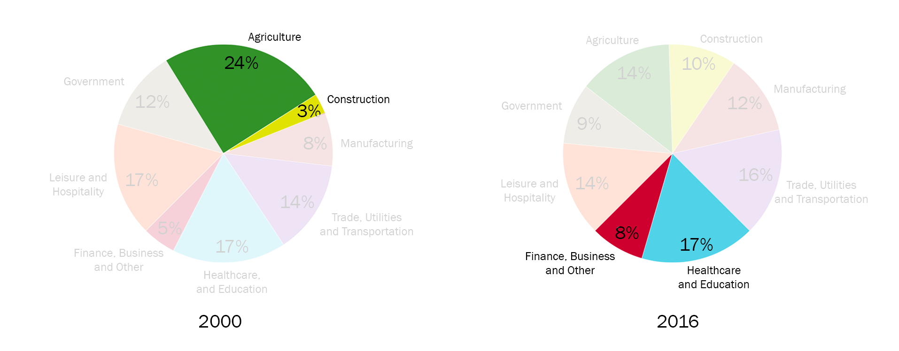

IELTS writing task 1: describing a pie chart
In this lesson we're going to learn how to effectively describe a pie chart in IELTS Writing task 1. To get a band 9 for your answer, you should follow this answer structure:
- Introduction
- General overview
- Specific features
Let's look in detail how to apply this structure to answer IELTS pie chart question.
IELTS pie chart Question:
The two pie charts below show the percentages of industry sectors' contribution to the economy of Turkey in 2000 and 2016.
Summarize the information by selecting and reporting the main features and make comparisons where relevant.
You can watch a video tutorial on how to describe pie charts in IELTS Academic Writing task 1:
And now let's learn how to describe IELTS pie charts by doing this example.
IELTS pie chart answering strategy:
1. Introduction
The first paragraph you write is an introduction. The introduction is 1 or 2 sentences, where you introduce your chart. In the introduction you have to paraphrase the information from your question and mention 2 important things:
- what your graph shows
- for what period of time
In our example, I wrote the introduction this way:
The two pie charts illustrate how different industry sectors contributed to the economy of Turkey percentagewise in the years 2000 and 2016.
So, I just took the information from the question card and paraphrased it in such way:
show → illustrate
the percentages of industry sectors' contribution to the economy of Turkey → how different industry sectors contributed to the economy of Turkey percentagewise
in 2000 and 2016 → in the years 2000 and 2016.
pie charts = pie charts (don't change this!)
2. General Overview
The second paragraph of your answer is a general overview, where you briefly describe 2-4 key features of your chart.
In our case there are two main options to describe key features:
- find the biggest and smallest slices of each pie chart
- find which slices became bigger/smaller or didn't change
Each option is fine, but don't write both of them because you have to keep your overview short. I have chosen then first option. Let's look again at our pie charts and identify the biggest/smallest slices:
Now include the information you've gathered from the chart into your overview. Always start your general overview with the word overall:
Overall, at the beginning of the period construction contributed the least to the economy of Turkey and agriculture was the most significant economic sector. In comparison, at the end of the period healthcare and education became the largest economic segment and the lowest contribution was made by financial, business and other services.
3. Specific details
The last part of your answer is specific details. You should group the specific details of your chart in 2 or 3 paragraphs.
You can group data in such way:
- Sectors that had an increase (construction; trade utilities & transportation; manufacturing; finance, business and other services)
- Sectors that had a decrease or didn't change (agriculture; government; leisure and hospitality; healthcare and education)
In our case, paragraphs with specific details may look as follows:
Construction sector accounted for 3% of Turkey's economy in 2000, and experienced a more than threefold increase to one-tenth in 2016. Economic income from trade, utilities and transportation was 14% in 2000 and experienced a slight growth of 2% in 2016. At the beginning of the period, manufacturing and finance, business and other services made up 8% and 5% of Turkey's economy, respectively, and these figures rose to 12% and 8% in 2016.
Agriculture, which comprised almost a quarter of Turkey's economy in 2000, fell to 14% in 2016. In 2000 economic outputs from government and leisure and hospitality sectors were at 12% and 17%, respectively, and both decreased by 3% after 16-year period. In contrast, contribution from healthcare and education sector remained constant in both years at 17%.
Useful vocabulary to write a percentage of a certain sector::
- sector X was 3%
- sector X made up 3%
- sector X accounted for 3%
- sector X comprised 3% of [the whole chart]
The full answer + Practice
It's the end, we have finally written the answer for IELTS bar chart question. And now, let's practice: fill in the gaps in this answer with appropriate words.
The two illustrate how different industry sectors contributed to the economy of Turkey percentagewise in the years 2000 and 2016.
, at the beginning of the period construction contributed the least to the economy of Turkey and agriculture was the most significant economic sector. In , at the end of the period healthcare and education became the largest economic segment and the lowest contribution was made by financial, business and other services.
Construction sector accounted for 3% of Turkey's economy in 2000, and experienced a more than increase to one-tenth in 2016. Economic income from trade, utilities and transportation was 14% in 2000 and experienced a slight of 2% in 2016. At the beginning of the period, manufacturing and finance, business and other services made up 8% and 5% of Turkey's economy, respectively, and these figures rose to 12% and 8% in 2016.
Agriculture, which almost a quarter of Turkey's economy in 2000, fell to 14% in 2016. In 2000 economic outputs from government and leisure and hospitality sectors were at 12% and 17%, , and both decreased by 3% after 16-year period. In contrast, contribution from healthcare and education sector remained in both years at 17%.
(203 words)